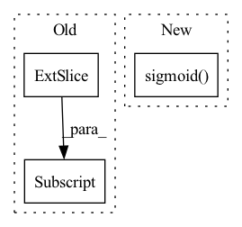

Pattern ID :1354

Before Change
y = x[i].clone()
y[..., :5 + self.nc].sigmoid_()
if self.inplace:
y[..., 0:2] = (y[..., 0:2] * 2 + self.grid[i]) * self.stride[i] // xy
y[..., 2:4] = (y[..., 2:4] * 2) ** 2 * self.anchor_grid[i] // wh
else: // for YOLOv5 on AWS Inferentia https://github.com/ultralytics/yolov5/pull/2953
xy, wh, etc = y.split((2, 2, self.no - 4), 4) // tensor_split((2, 4, 5), 4) if torch 1.8.0
After Change
if isinstance(self, Segment): // (boxes + masks)
xy, wh, conf, mask = x[i].split((2, 2, self.nc + 1, self.no - self.nc - 5), 4)
xy = (xy.sigmoid() * 2 + self.grid[i]) * self.stride[i] // xy
wh = (wh.sigmoid() * 2) ** 2 * self.anchor_grid[i] // wh
y = torch.cat((xy, wh, conf.sigmoid(), mask), 4)
else: // Detect (boxes only)
In pattern: SUPERPATTERN
Frequency: 3
Non-data size: 3
Instances
Fragment ID: 3949936
Project Name: ultralytics/yolov5
Commit Name: 060837406542c5c65301b8fde641f4d92a1f395e
Time: 2022-09-17
Author: glenn.jocher@ultralytics.com
File Name: models/yolo.py
M Class Name: Detect
N Class Name: Detect
M Method Name: forward(2)
N Method Name: forward(2)
M Parent Class: nn.Module
N Parent Class: nn.Module
M File Name: models/yolo.py
N File Name: models/yolo.py
M Start Line: 61
M End Line: 77
N Start Line: 58
N End Line: 77
'>
Before Change
Weights across different joint types.
pred = output[:, :, :2]
sigma = output[:, :, 2:4].sigmoid()
error = (pred - target) / (sigma + 1e-9)
// (B, K, 2)
After Change
target_weight (Tensor[N, K, D]):
Weights across different joint types.
sigma = sigma.sigmoid()
error = (pred - target) / (sigma + 1e-9)
// (B, K, 2)
log_phi = self.flow_model.log_prob(error.reshape(-1, 2))
'>
Fragment ID: 3949916
Project Name: open-mmlab/mmpose
Commit Name: 7cb588a1eba1bdca1746924dd3e96d3541410003
Time: 2022-08-03
Author: 674106399@qq.com
File Name: mmpose/models/losses/regression_loss.py
M Class Name: RLELoss
N Class Name: RLELoss
M Method Name: forward(5)
N Method Name: forward(4)
M Parent Class: nn.Module
N Parent Class: nn.Module
M File Name: mmpose/models/losses/regression_loss.py
N File Name: mmpose/models/losses/regression_loss.py
M Start Line: 60
M End Line: 61
N Start Line: 224
N End Line: 239
'>
Before Change
beta = torch.zeros(self.items_total, 1).to(nodes.device)
beta[output_nodes] = 1
embed = (1 - beta * self.alpha) * items_embedding.clone()
embed[output_nodes, :] = embed[output_nodes, :] + self.alpha[output_nodes] * output_node_features
batch_embedding.append(embed)
id += num_nodes
batch_embedding = torch.stack(batch_embedding)
After Change
:return:
items_embedding = self.item_embedding(torch.tensor([i for i in range(self.items_total)]).to(nodes.device))
alpha = torch.sigmoid(self.alpha)
embed = (1 - alpha) * items_embedding.clone() + alpha * nodes_output
return embed
'>
Fragment ID: 3949920
Project Name: benedekrozemberczki/pytorch_geometric_temporal
Commit Name: c402d2a14167bceaa3c8d3845879f8056e8aead7
Time: 2021-07-18
Author: benedek.rozemberczki@gmail.com
File Name: torch_geometric_temporal/nn/attention/dnntsp.py
M Class Name: GlobalGatedUpdater
N Class Name: GlobalGatedUpdater
M Method Name: forward(3)
N Method Name: forward(4)
M Parent Class: nn.Module
N Parent Class: nn.Module
M File Name: torch_geometric_temporal/nn/attention/dnntsp.py
N File Name: torch_geometric_temporal/nn/attention/dnntsp.py
M Start Line: 78
M End Line: 98
N Start Line: 85
N End Line: 87